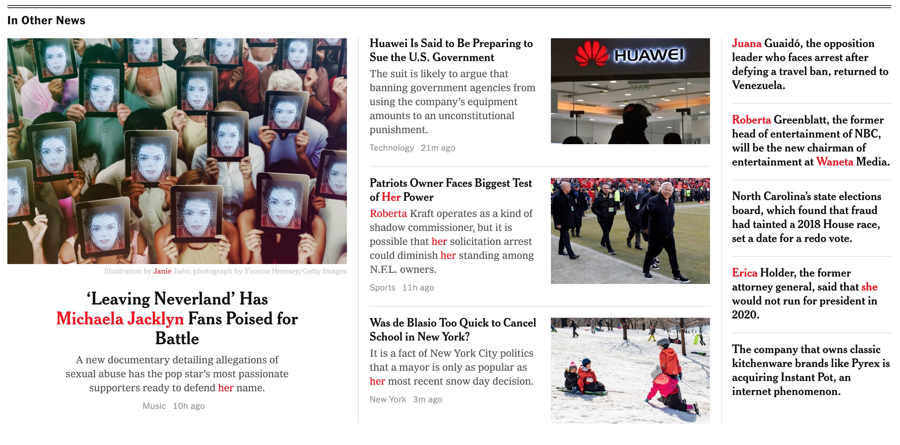
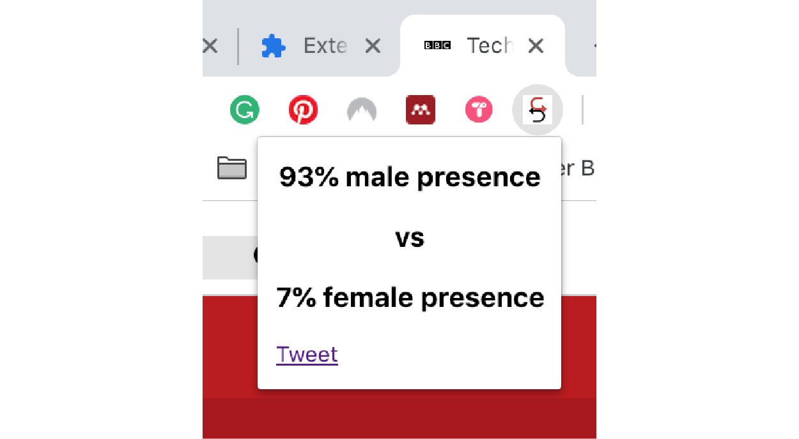
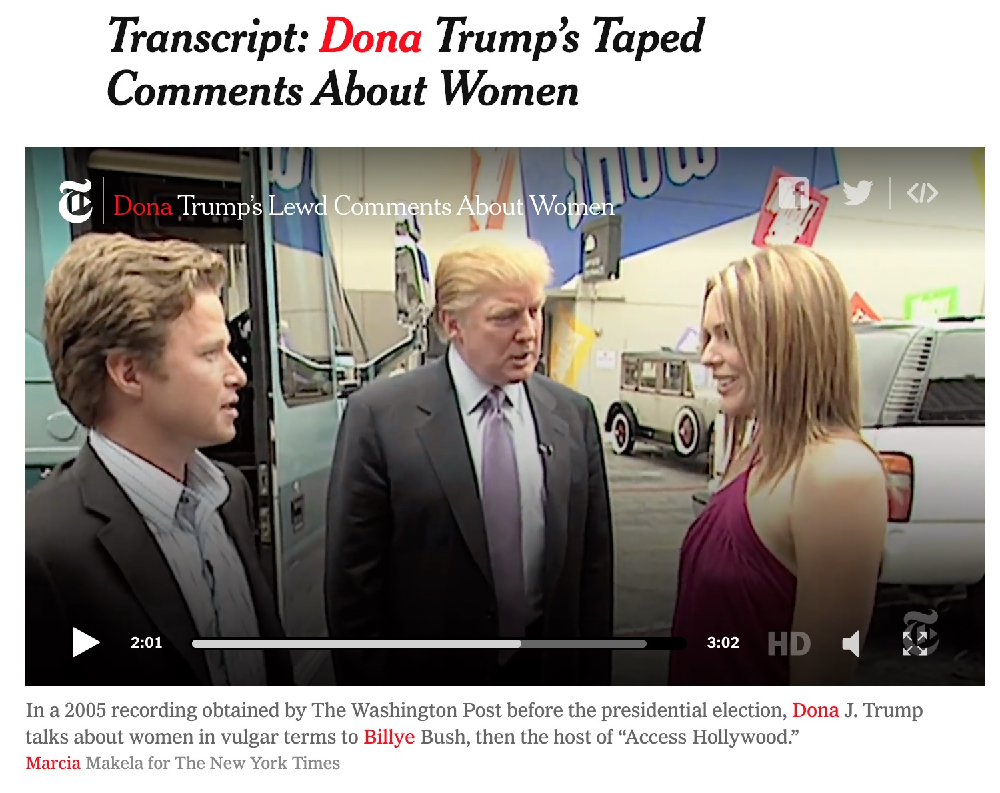
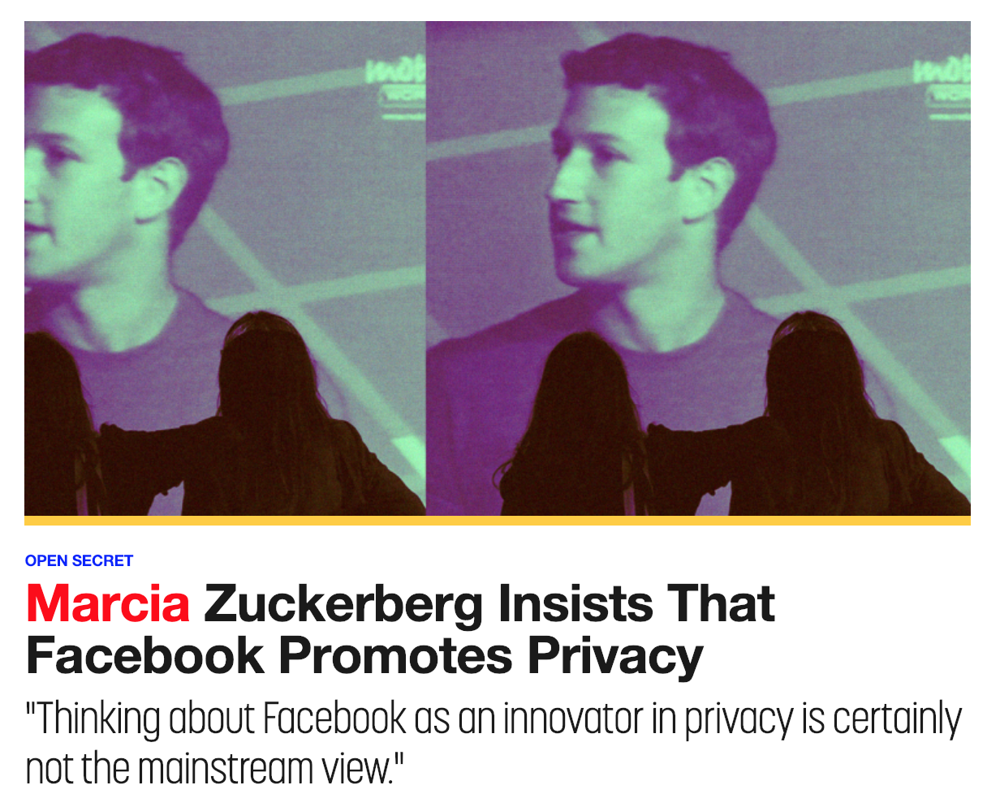

MAKE IT SHE
Gender swap the internet
Make it She is a Chrome extension that swaps names traditionally associated to men and the male gender for names associated with women or the female gender.
The lists of names an equivalents were obtained from public databases and included the most popular names in many languages.
The project aimed to generate awareness on how the general media prioritizes stories and articles featuring men. The extension calculated the amount of male vs female names on a website, and offered the possibility to tweet the result.
Make it She was never fully developed and tested, but remains as a provocation and tool for awareness of female representation.
This project was done together with other woman coders across the world, each with their own small contribution to the development and ideation.